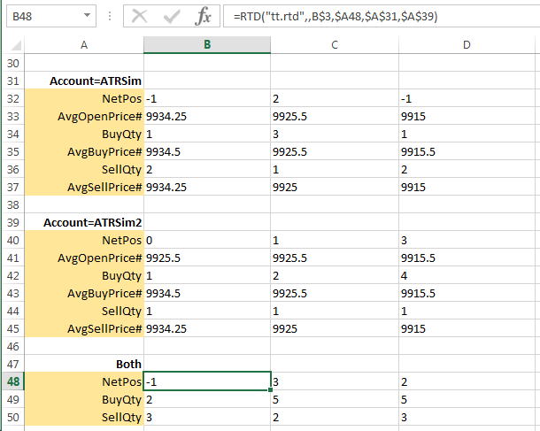

When you use multiple filters in a formula, the TT RTD Server applies Boolean logic to the values based on whether you test for equalities or inequalities. The following table explains how the TT RTD Server determines which logic to use when finding matching records.
| Operator | Logic | Examples |
|---|---|---|
| All = | Boolean OR |
"Account=JDOE","Account=BSMITH" Returns records for both JDOE and BSMITH accounts |
| All <> | Boolean AND |
"Account<>JDOE","Account<>BSMITH" Returns records for all accounts except JDOE and BSMITH |
| Mixed | Boolean AND |
"Account=JDOE","Account<>BSMITH" Returns records for JDOE and all accounts expect BSMITH |
For example, if you stored the string "NetPos" in cell A48, the string "Account="ATRSim" in cell A31, the string "Account=ATRSim2" in cell A39, and the instrument ID in cell B3, you could extract the filtered net position as follows:
=RTD("tt.rtd",,B3,A48,A31,A39)
After processing the formula, Excel displays the result in the cell, similar to the following. Note that the "$" in the cell references are Excel mixed reference notations.
